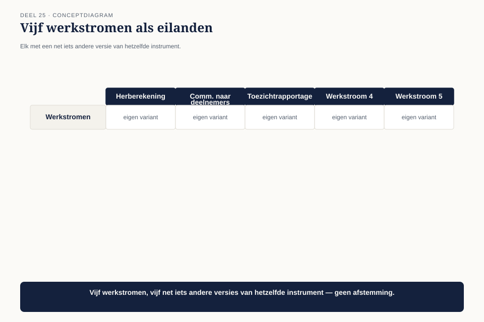
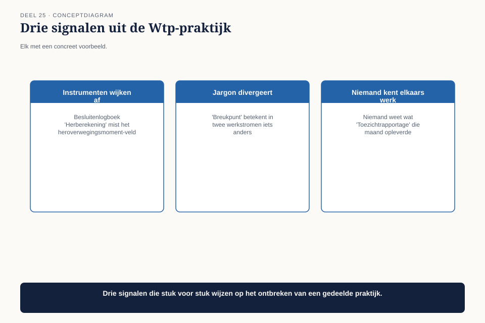
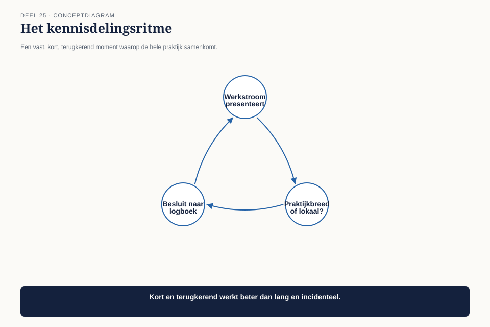
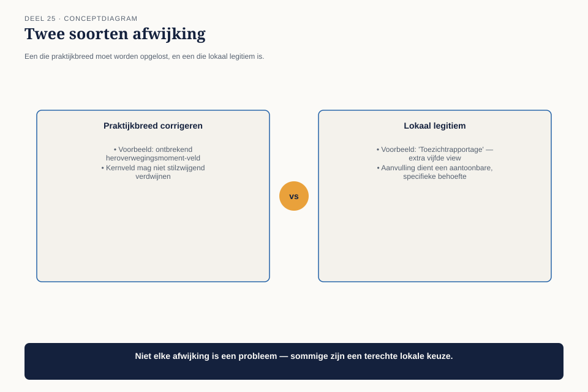

Cursus BTABoK · Niveau 3 (CITA-S / CITA-P) · Deel 25 van 30
Community of practice
De Wtp-architectuurpraktijk is inmiddels op volle sterkte: negen architecten, verdeeld over vijf verschillende werkstromen binnen de overgang naar het nieuwe pensioenstelsel. Ze zien elkaar zelden allemaal tegelijk. Dit deel gaat over hoe je, in die situatie, één praktijk blijft in plaats van vijf losse groepjes die toevallig dezelfde titel dragen. Aan het eind van dit deel kun je:
7secties
±2udagdeel + huiswerk
4controlevragen
4figuren
Positionering. Deze cursus bereidt je voor op de Iasa-certificeringen en is uitdrukkelijk géén vervanging van het officiële examen- en cursusmateriaal van Iasa.
Niveau 3: ❶ De architectuurpraktijk → ❷ Mentoring en ontwikkeling → ❸ Community of practice (hier) → ❹ Board-communicatie → ❺ Strategische breedte → ❻ Risicobeheer en continuïteit op praktijkschaal → ❼ Gedragscode voor senior architecten → ❽ Het board-dossier en de afsluitende verdediging
01
Waar dit deel over gaat
⏱ 8 min
De Wtp-architectuurpraktijk is inmiddels op volle sterkte: negen architecten, verdeeld over vijf verschillende werkstromen binnen de overgang naar het nieuwe pensioenstelsel. Ze zien elkaar zelden allemaal tegelijk. Dit deel gaat over hoe je, in die situatie, één praktijk blijft in plaats van vijf losse groepjes die toevallig dezelfde titel dragen.
Aan het eind van dit deel kun je:
de signalen herkennen waarop een praktijk uiteenvalt in geïsoleerde eilandjes;
een kennisdelingsritme inrichten dat past bij een verspreide praktijk;
het onderscheid maken tussen kennis die gedeeld moet worden en kennis die lokaal mag blijven.
Controlevraag
Uit Werkboek deel 25, Opdracht 4 — De praktijk testen: de invalproef
1De praktijk testen: de invalproefToon antwoord
In groepen van drie tot vier, 15 minuten
Bespreek: als iemand van buiten jullie team of praktijk morgen zou moeten invallen, hoe lang zou het duren voordat diegene operationeel is? Wat zou dat sneller maken?
Uitwerking
Geen modelantwoord. Deze oefening werkt het best als een eerlijke schatting, niet als wensdenken. Een schatting van “een paar weken” is een reëel signaal dat de praktijk richting de eilandjes uit 25.2 beweegt, ook als niemand dat eerder had opgemerkt.
02
Vijf werkstromen, vijf talen
⏱ 8 min
Zes maanden in de Wtp-overgang blijkt dat de vijf werkstromen — elk met twee architecten — hun eigen jargon, hun eigen versie van instrumenten uit deze cursus, en hun eigen interpretatie van kaders hebben ontwikkeld. Een architect uit werkstroom “Herberekening” gebruikt het besluitenlogboek anders dan een architect uit werkstroom “Communicatie naar deelnemers” — niet fundamenteel anders, maar genoeg om verwarring te veroorzaken zodra iemand tussen werkstromen wisselt.

Figuur 25-1 — vijf werkstromen als eilanden, elk met een net iets andere versie van hetzelfde instrument
Toen een architect tijdelijk inviel in een andere werkstroom om een piek op te vangen, kostte het haar twee dagen om te begrijpen hoe daar het besluitenlogboek werd gebruikt — tijd die met een gedeelde praktijkstandaard niet nodig was geweest.
03
De signalen van uiteenvallende praktijk
⏱ 8 min
De eerste competentie leert drie signalen herkennen die vroeg waarschuwen voor een praktijk die uit elkaar groeit, vóórdat het een acuut probleem wordt.

Figuur 25-2 — drie signalen, elk met een concreet voorbeeld uit de Wtp-praktijk
Signaal
Wat het betekent
Voorbeeld bij Wtp
Instrumenten wijken af zonder besluit
een team past een gedeeld instrument geleidelijk aan, zonder dat te melden
het besluitenlogboek van “Herberekening” mist het heroverwegingsmoment-veld — niemand besloot dat bewust weg te laten, het verdween gewoon
Jargon divergeert
dezelfde term betekent in twee werkstromen iets anders
“breukpunt” betekent in de ene werkstroom een technisch risico, in de andere een communicatieprobleem
Niemand kent elkaars werk meer
architecten kunnen niet meer navertellen wat een collega in een andere werkstroom doet
bij een gezamenlijke lunch blijkt niemand te weten wat de architect van “Toezichtrapportage” die maand heeft opgeleverd
Geen van deze drie signalen is op zichzelf een crisis. Samen zijn ze een vroege waarschuwing dat de praktijk, ondanks een gedeeld charter (deel 23), feitelijk uiteenvalt.
Controlevraag
Uit Werkboek deel 25, Opdracht 1 — De drie signalen herkennen
1De drie signalen herkennenToon antwoord
Individueel, 20 minuten
Voor een praktijk, team of afdeling uit je eigen werk die uit meerdere subgroepen bestaat: herken je een van de drie signalen uit 25.3? Geef voor elk signaal dat je herkent een concreet voorbeeld.
Uitwerking
Geen modelantwoord. Verwacht patroon: het derde signaal (“niemand kent elkaars werk meer”) wordt het vaakst herkend, omdat het het meest zichtbaar is in het dagelijks gevoel van een team. De eerste twee signalen (instrumenten die afwijken, jargon dat divergeert) vergen meer bewuste inspectie om op te merken.
04
Het kennisdelingsritme
⏱ 8 min
De tweede competentie is het instrument dat deze divergentie tegengaat, zonder terug te vallen op een zwaar, verplicht proces.

Figuur 25-3 — een kennisdelingsritme — een vast, kort, terugkerend moment waarop de hele praktijk samenkomt
Het instrument: een vast, licht ritme van dertig tot vijfvijftig minuten, elke twee weken, met een vaste, beperkte vorm:
Elke sessie presenteert één werkstroom (bij toerbeurt) één ding dat ze hebben geleerd of aangepast.
Elke sessie eindigt met de vraag: “Is dit iets voor het hele praktijkinstrumentarium, of alleen voor deze werkstroom?”
Besluiten om een instrument praktijkbreed aan te passen, gaan naar het gedeelde besluitenlogboek — dezelfde discipline als in deel 17.
Bij Wtp levert dit binnen twee maanden een concrete correctie op: het ontbrekende heroverwegingsmoment-veld in het besluitenlogboek van “Herberekening” wordt hersteld, en de term “breukpunt” wordt praktijkbreed vastgelegd met één betekenis — technisch risico, met een apart, nieuw begrip voor het communicatieprobleem dat de andere werkstroom bedoelde.
Controlevraag
Uit Werkboek deel 25, Opdracht 2 — Het kennisdelingsritme ontwerpen
1Het kennisdelingsritme ontwerpenToon antwoord
In tweetallen, 20 minuten
Ontwerp een kennisdelingsritme voor je eigen praktijk: frequentie, duur, vorm, en de vraag waarmee elke sessie eindigt.
Uitwerking
Geen modelantwoord. Beoordeel op: is de vorm kort en licht genoeg om vol te houden (vergelijkbaar met de dertig tot vijfvijftig minuten uit de reader), of wordt het een zwaar, tijdrovend proces dat waarschijnlijk binnen een paar maanden wegvalt?
05
Wat lokaal mag blijven
⏱ 8 min
De derde competentie waarschuwt tegen het omgekeerde probleem: niet alles hoeft praktijkbreed gelijk te zijn. Sommige aanpassingen zijn een terechte reactie op de specifieke aard van een werkstroom, geen afwijking die gecorrigeerd moet worden.

Figuur 25-4 — twee soorten afwijking naast elkaar — een die praktijkbreed moet worden opgelost, een die lokaal legitiem is
Praktijkbreed corrigeren
Lokaal legitiem
Voorbeeld
het ontbrekende heroverwegingsmoment-veld
“Toezichtrapportage” gebruikt een extra, vijfde view specifiek voor toezichthouderrapportages, die de andere werkstromen niet nodig hebben
Waarom
een kernveld van een gedeeld instrument mag niet stilzwijgend verdwijnen
een aanvulling die een specifieke, aantoonbare behoefte van die werkstroom dient
Het onderscheid: raakt de afwijking de kern van een gedeeld instrument (dan corrigeren), of is het een aanvulling die de kern intact laat en een specifieke behoefte dient (dan legitiem lokaal)? Dit is dezelfde logica als de patroonkaart uit deel 17 — “wanneer het niet past” is geen fout in het patroon, maar een legitieme grens.
Controlevraag
Uit Werkboek deel 25, Opdracht 3 — Praktijkbreed of lokaal legitiem
1Praktijkbreed of lokaal legitiemToon antwoord
Individueel, 15 minuten
Voor elk van de volgende situaties: moet dit praktijkbreed gecorrigeerd worden, of is het lokaal legitiem?
Eén team laat een verplicht veld uit een gedeeld sjabloon weg omdat het “te veel tijd kost”
Eén team voegt een extra controlestap toe vanwege een specifieke wettelijke eis die alleen voor hen geldt
Eén team noemt hun documenten anders dan de rest, waardoor zoeken lastiger wordt
Eén team gebruikt een aanvullend, eigen sjabloon naast het gedeelde sjabloon, voor een taak die de andere teams niet hebben
Uitwerking
#
Situatie
Praktijkbreed of lokaal
1
Verplicht veld weggelaten, “kost tijd”
Praktijkbreed corrigeren — dit raakt de kern van het gedeelde instrument
2
Extra stap door specifieke wettelijke eis
Lokaal legitiem — een aantoonbare, specifieke behoefte
3
Andere documentnamen, zoeken wordt lastiger
Praktijkbreed corrigeren — dit raakt de vindbaarheid voor de hele praktijk
4
Aanvullend eigen sjabloon, naast het gedeelde
Lokaal legitiem — zolang het gedeelde sjabloon intact blijft
Het patroon. Situaties 1 en 3 raken iets dat de hele praktijk nodig heeft (een compleet gedeeld instrument, vindbaarheid). Situaties 2 en 4 voegen iets toe zonder de kern aan te tasten. Dat onderscheid — kern aangetast versus kern intact met een aanvulling — is precies de vraag uit 25.5.
06
Het effect na twee maanden
⏱ 8 min
Bij de volgende kennisdelingssessie meldt de architect die eerder twee dagen kwijt was aan het begrijpen van een andere werkstroom, dat een collega die nu tijdelijk invalt, binnen een halve dag operationeel is — het besluitenlogboek werkt overal hetzelfde, het jargon is gedeeld, en de vijfde view van “Toezichtrapportage” staat expliciet gedocumenteerd als lokale aanvulling in plaats van verwarrende afwijking.
07
Kernbegrippen
⏱ 8 min
Begrip
Betekenis in deze cursus
Drie signalen van uiteenvallende praktijk
instrumenten wijken af zonder besluit, jargon divergeert, niemand kent elkaars werk meer
Kennisdelingsritme
een vast, licht, tweewekelijks moment waarop één werkstroom deelt wat er is geleerd of aangepast
Praktijkbreed versus lokaal legitiem
een afwijking die de kern van een gedeeld instrument raakt, wordt gecorrigeerd; een aanvulling die een specifieke behoefte dient zonder de kern aan te tasten, mag lokaal blijven
Verder naar deel 26
Deel 26 — Board-communicatie — bouwt voort op wat hier is behandeld.